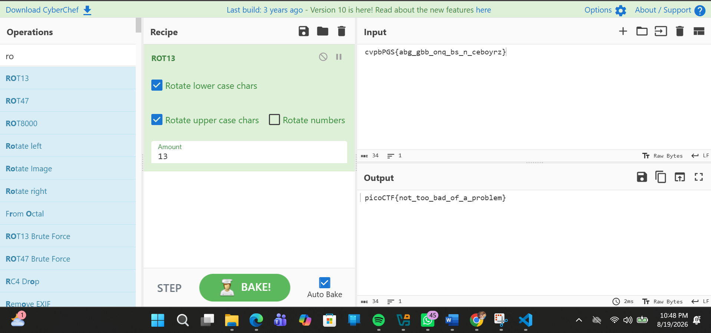
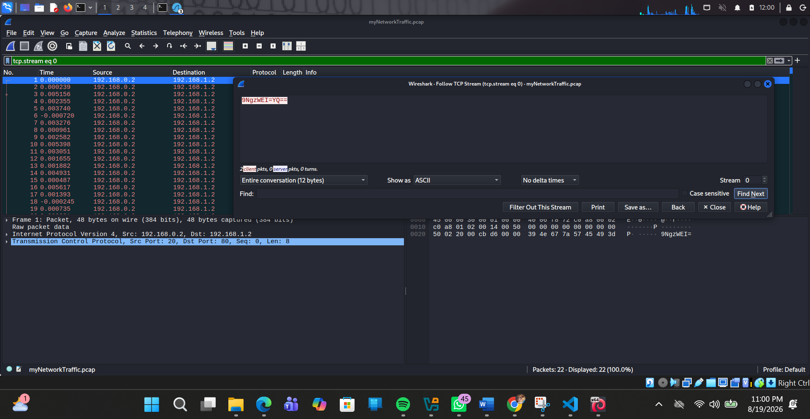

Practical security analysis focused on solving PicoCTF challenges, deciphering cryptographic algorithms, and conducting deep digital forensics investigations on Kali Linux.
Analyzing ciphers, breaking weak RSA implementations, Base/Hex decoding, and writing Python scripts to automate decryption workflows.

Figure 1: Decryption workflow & payload analysis on PicoCTF cryptography challenge.
Extracted hidden Base64-encoded payload from PCAP network stream using Wireshark TCP Stream Follow filters on Kali Linux environment.

Figure 2: Captured encoded payload 9NgzWEI=YQ== extracted from TCP Stream 0 in Wireshark.